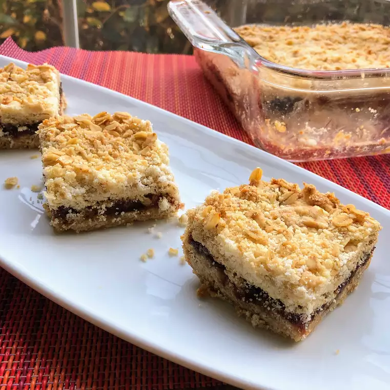

Per 12 Servings: 369 calories: protein 2.9g: carbohydrates 39.3g: fat 23.1g: sodium 445.6mg.
Prep: 15 mins Cook: 45 mins Total: 1 hr Servings: 12 Yield: 1-9 in baking dish
Ingredients
Filling:
1 cup pitted and chopped dates
1/4 cup cold water
2 tablespoons white sugar
1 teaspoon vanilla extract
Crumble:
1 3/8 cups self-rising flour
3/4 cup margarine
1 cup oats
3/4 cup white sugar
Directions
Preheat oven to 355 degrees F (180 degrees C). Grease a 9-inch square baking dish.
Combine dates, water, 2 tablespoons sugar, and vanilla extract in a saucepan; cook and stir over medium heat until filling mixture forms a paste, about 5 minutes. Add more water if filling gets too thick. Remove saucepan from heat and
cool.
Place flour in a bowl and rub margarine into flour using your hands until mixture resembles bread crumbs; stir in oats and 3/4 cup sugar. Press 1/2 of the mixture into the prepared baking dish. Spoon filling over over crust, smoothing
with the back of the spoon, leaving a thin border between the filling and the edge of the dish. Sprinkle the remaining crumble mixture over filling.
Bake in the preheated oven until top is golden brown, 40 to 45 minutes.